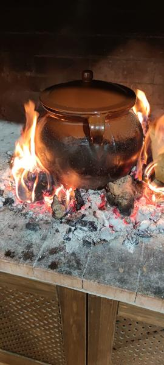
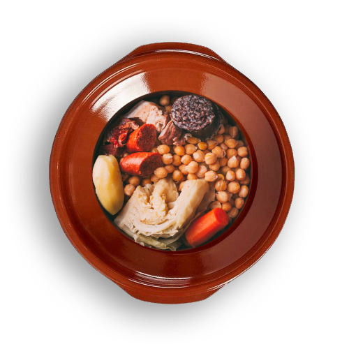
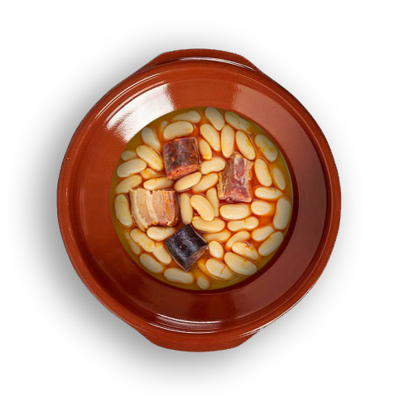
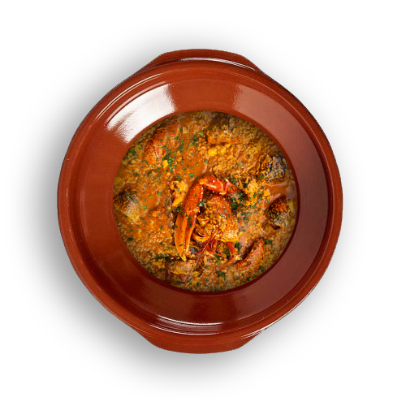
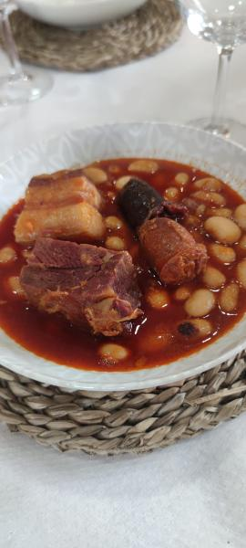
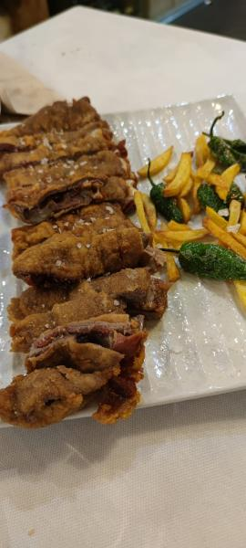
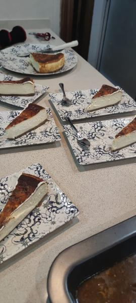
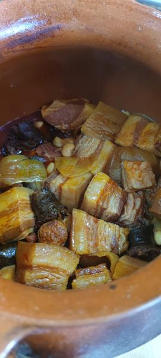
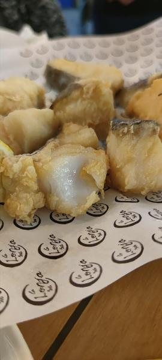

Cocinado en leña, en olla de barro.
Comida casera de las de toda la vida, al calor de la lumbre, en Pedro Muñoz. Todos los días, de 9:00 a 24:00.

Por encargo, a fuego lento
Hay platos que piden su tiempo en la lumbre. Encárgalos con antelación y te los tenemos listos, para comer aquí o para llevar.
-

Cocido en olla de barro
La carne tierna, la verdura suave y ese aroma ahumado que solo da el fuego de leña.
-

Fabada en olla de barro
Cada ingrediente se funde a fuego lento, con el sabor tradicional que le da el humo de la leña.
-

Arroz caldoso con bogavante
De marisco, carne y bogavante nacional. Una mezcla de sabores para una comida de las que se recuerdan.
Llámanos, dinos para cuántos y para qué día, y lo dejamos en la lumbre.
Hacer un encargo 926 82 15 30Lo que sale de la lumbre
Cocina de casa, sin prisas y con leña. Lo de cada día y lo de siempre.
-
Guisos caseros
Platos de cuchara de los de toda la vida, hechos despacio en olla de barro.

-
Carnes a la brasa
Hechas sobre la leña, con su punto de humo y patatas al lado.
-
Menú del día
Cocina casera que cambia cada día. Llama y te contamos qué hay hoy en la olla.

-
Postres caseros
Para terminar como se termina en casa: con algo dulce hecho aquí.

- Raciones generosas
- Vinos de la tierra
- La caña, con su tapa
- Terraza grande
- Para comer aquí o para llevar
Recién salido


Lo dicen los que ya han venido
Nota de 4,6 sobre 5. 229 opiniones en Google, con una nota media de 4,6 sobre 5.
Leer las opiniones en Google¿Te guardamos mesa?
Llama y reserva, o haz tu encargo. Te esperamos con la lumbre encendida.
Llamar al 926 82 15 30- Dónde
- C. Paloma, 7213620 Pedro Muñoz (Ciudad Real)Cómo llegar
- Horario
- Todos los díasDe 9:00 a 24:00
- Cómo
- Comer aquí, en la terraza o para llevarNo hacemos envíos a domicilio
- @maxo_comida_caseraLos platos del día, en fotos